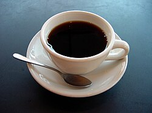

Sveiki atvykę į šį puslapį!
Čia rasite pagrindinį sielos energijos šaltinį ir daugiau informacijos apie jį
Gyvenimo būdas, darbas, mokykla neleidžia pakankamai pailsėti ir dar blogiau - išsimiegoti? Yra tam vienas teisingas sprendimas - KAVA!

Kava iš esmės yra tiesiog karšta pupelių sriuba, kurią geriame tik tam, kad apgautume savo smegenis ir jos pamirštų, jog iš tikrųjų nori miegoti.
Daugiau apie kavą
Kavos istorija
Kava yra kilusi iš Etiopijos, kur dar IX amžiuje pastebėtas jos tonizuojantis poveikis.
- XV amžiuje ji išplito Jemene, kur pradėta skrudinti ir virti.
- XVI-XVII amžiuje gėrimas per Osmanų imperiją ir Venecijos pirklius pasiekė Europą, kur greitai išpopuliarėjo pirmosios kavinės.
- XVIII amžiuje kolonizatorių dėka kavamedžiai buvo išvežti į Aziją ir Ameriką, taip sukuriant pasaulinę kavos pramonę.